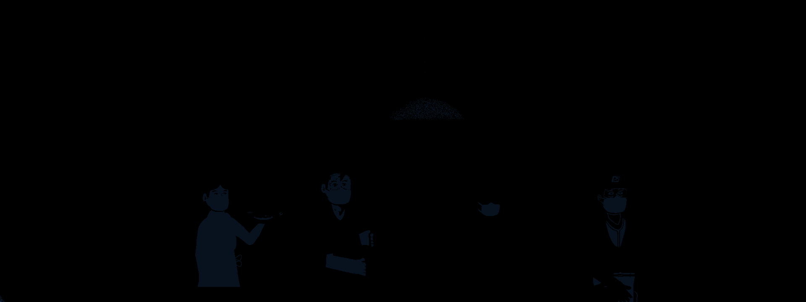

Do You Hear Us?
I was approached to create the intro and outro animations for Do You Hear Us?, an independent online documentary series. The project’s mission was to highlight the everyday challenges and personal stories of working people, specifically centered around the unique struggles faced during the COVID-19 pandemic.
Illustration / Branding / Typography / Animation
Problem
The challenge was twofold: establishing a visual identity for a series centering on marginalized workers during a global crisis, while simultaneously navigating the professional complexities of my first high-stakes freelance engagement. My goal was to ensure that the visuals I established felt deeply intimate and human, matching the weight and vulnerability of the personal stories being shared without feeling exploitative or sterile. Operationally, the project required me to step into a new professional arena: managing the working dynamic with a client as creative director, where I had to balance diverse feedback and strict production deadlines without compromising on the visuals' quality.
Design Intent
My intent was to use light as a central narrative and visual metaphor. By placing characters within compositions featuring prominent, warm light sources, I sought to symbolically "highlight" the people who are typically overlooked, literally and figuratively bringing them out of the shadows and into the forefront of the viewer’s attention. Every choice—from the soft color palette to the character-focused framing—was made to emphasize the dignity of the subjects and ensure the animation served as a respectful, welcoming bridge into their lived experiences.
Insight
To truly capture the spirit of the series, the animation needed a "lived-in," organic quality that put people first; the abstract nature of my previous motion graphic projects would feel too cold for such a personal subject. This led me to pursue 2D character animation for the first time in After Effects, using the Duik plugin to create movements that felt more natural and fluid. By focusing on character-driven visuals rather than just typography or symbols, the brand identity could mirror the documentary's core mission of human-centered storytelling.
